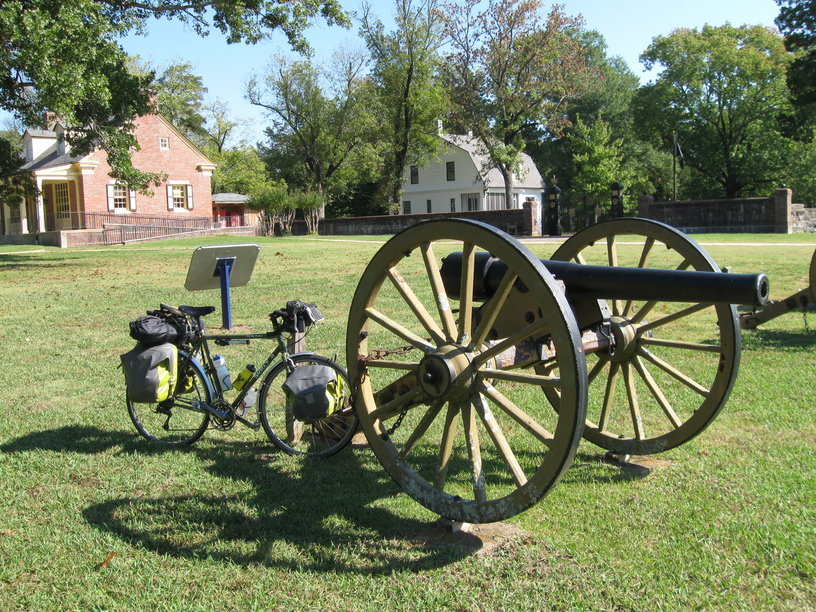
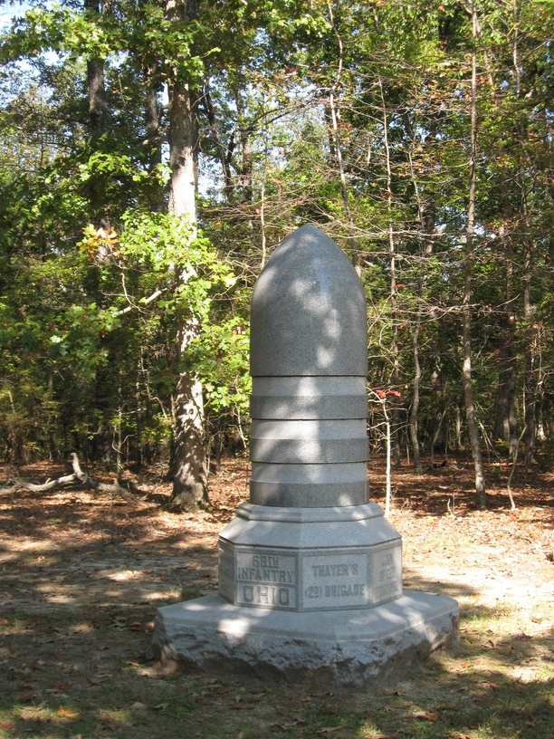
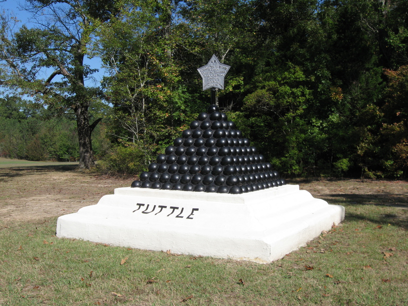

18 Oct 2008, Tishomingo, MS
I had another good day full of unique experiences. I left United Steaks around 10 and rode the 5 miles to Shiloh battlefield, where I was planning to make some oatmeal for breakfast. I poked around the battlefield a bit before heading over to the picnic area. I rolled in & saw that some people were setting up a big lunch on the left half of the pavilion. I asked them if I could use the other half, and we got to talking. They were there for a family reunion—the family was still out touring the battlefield—which was quite the affair. There were four generations of the Wolfe family present, and in the oldest generation there were siblings, so the group included children who were third cousins. It was explained to me that the oldest generation was four siblings (although only two were present), and that the children of each of these four took turns planning the reunion each year. So this year it was Maxine's children's turn. So the three people setting up lunch were Maxine and her son and daughter, Gary and Francine. They were really fun people, and were interested in my trip. Gary told me about his participation in the High Pointers Club, in which he was trying to reach the high point in all 48 contiguous states. He had reached 42 of them so far. He was also full of stories of outdoors adventures he and his friends had undertaken, including lots of canoeing & kayaking.
I ended up lunching with them (a "pack of hungry Wolves" as they described themselves), and spent an hour or two meeting the family, and then taking their group picture for them back at the battlefield.
When I was dropped off back at the picnic area to get back on my bike there was another party forming—this one a high school reunion—and I had to turn down their kind offers of food, having gone only 7 miles at 1:30 in the afternoon. Before I headed out, though, one of the women led a prayer for me & my trip, which I found very thoughtful.
I then took off for Mississippi, which I reached fairly quickly. As the sun was fading I started looking for a place to stop for the night. I pulled over to ask a guy if he knew of any campgrounds nearby. The nearest one he said would be 8 or 9 miles—too far—so he offered to let me into the gym of the church down the street (which he was deacon of). Turns out the gym is a pretty Ritzy place by my standards—a full kitchen & bathrooms with showers were included. Although I used my own stove & pans to make dinner, it seemed downright luxurious to have a sink to wash them in. And I got a shower for a second day in a row!
Life is good.
"Ask and it will be given to you; seek and you will find; knock and the door will be opened to you." -Matthew 7:7


